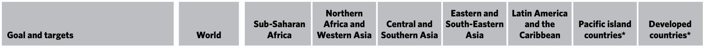
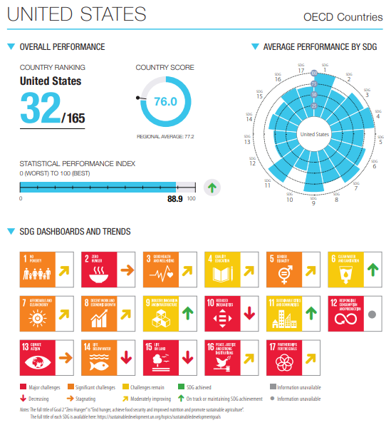

Sustainability Series #15: Life on Land
Protect, restore and promote sustainable use of terrestrial ecosystems, sustainably manage forests, combat desertification, and halt and reverse land degradation and halt biodiversity loss
Outcome targets
- By 2020, ensure the conservation, restoration and sustainable use of terrestrial and inland freshwater ecosystems and their services, in particular forests, wetlands, mountains and drylands, in line with obligations under international agreements
- By 2020, promote the implementation of sustainable management of all types of forests, halt deforestation, restore degraded forests and substantially increase afforestation and reforestation globally
- By 2030, combat desertification, restore degraded land and soil, including land affected by desertification, drought and floods, and strive to achieve a land degradation-neutral world
- By 2030, ensure the conservation of mountain ecosystems, including their biodiversity, in order to enhance their capacity to provide benefits that are essential for sustainable development
- Take urgent and significant action to reduce the degradation of natural habitats, halt the loss of biodiversity and, by 2020, protect and prevent the extinction of threatened species
- Promote fair and equitable sharing of the benefits arising from the utilization of genetic resources and promote appropriate access to such resources, as internationally agreed
- Take urgent action to end poaching and trafficking of protected species of flora and fauna and address both demand and supply of illegal wildlife products
- By 2020, introduce measures to prevent the introduction and significantly reduce the impact of invasive alien species on land and water ecosystems and control or eradicate the priority species
- By 2020, integrate ecosystem and biodiversity values into national and local planning, development processes, poverty reduction strategies and accounts
Means of implementation targets
- Mobilize and significantly increase financial resources from all sources to conserve and sustainably use biodiversity and ecosystems
- Mobilize significant resources from all sources and at all levels to finance sustainable forest management and provide adequate incentives to developing countries to advance such management, including for conservation and reforestation
- Enhance global support for efforts to combat poaching and trafficking of protected species, including by increasing the capacity of local communities to pursue sustainable livelihood opportunities
Global progress on SDG 15

Deforestation and forest degradation, continued biodiversity loss and the ongoing degradation of ecosystems are having profound consequences for human well-being and survival. The world fell short on 2020 targets to halt biodiversity loss. The COVID-19 pandemic has shown that, by threatening biodiversity, humanity threatens its own survival. While great efforts are being made to expand sustainable forest management, increase coverage of key biodiversity areas and sign up to legislation and treaties for protecting biodiversity and ecosystems, much more needs to be done to put the health of the planet at the centre of all plans and policies.
While the rate of deforestation in tropical regions has slowed in the past decade, vigilance and targeted efforts are required to maintain this trend. The proportion of forest area fell from 31.9 percent of total land area in 2000 to 31.2 percent in 2020, representing a net loss of almost 100 million hectares of the world's forests. From 2000 to 2020, forest area increased in Asia, Europe and Northern America, but decreased significantly in Latin America and sub-Saharan Africa. Despite the losses in forest cover, above-ground forest biomass per hectare, the proportion of forest area in protected areas and under long-term management plans, and certified forest area all increased or remained stable at the global level and in most of the regions of the world, demonstrating global progress towards sustainable forest management.
In 2020, an average of 43 percent of each terrestrial key biodiversity area, 42 percent of each freshwater key biodiversity area, and 41 percent of each mountain key biodiversity area were within protected areas, an increase of 13 to 14 percentage points since 2000.
As of February 2021, 127 countries and territories had committed to setting voluntary targets for achieving land degradation neutrality, and 68 countries and territories had already officially endorsed their targets. Overall, commitments to land restoration are estimated to amount to 1 billion hectares, of which 450 million hectares are covered by commitments through land degradation neutrality targets.
Data based on satellite imagery reveal that green coverage (forests, grasslands, croplands and wetlands) of the world's mountains remained steady at about 73 percent between 2000 and 2018. Green cover tends to be greater in mountain areas that are less than 2,500 metres above sea level. However, mountain green cover varies considerably across geographical regions, ranging from 100 percent in Oceania to 68 percent in Northern Africa and Western Asia.
Globally, the risk of species extinction has increased by about 10 percent over the past three decades. The Red List Index, which ranges from a value of 1 to indicate no risk of extinction to a value of 0 to indicate the extinction of all species, decreased from 0.81 in 1993 to 0.73 in 2021.
As at 1 February 2021, 128 countries, territories and the European Union had ratified the Nagoya Protocol on Access to Genetic Resources and the Fair and Equitable Sharing of Benefits Arising from their Utilization to the Convention on Biological Diversity, which is an increase of 60 countries and territories since 2016, and 67 countries, territories and the European Union have shared information on their Nagoya Protocol frameworks. There are now 148 parties to the International Treaty on Plant Genetic Resources for Food and Agriculture, and so far, 57 countries and territories have provided information about the measures that they have taken to implement the Nagoya Protocol.
The pandemic and the vast subsequent harm to human and economic well-being have starkly illustrated the potential global impact of zoonotic diseases, for which wildlife trade — both legal and illegal — is a potential vector. While certain markets for illegal wildlife products are declining, such as the market for ivory, which has decreased 3.5-fold since 2013, other species are under increasing threat as offenders shift their focus to more lucrative products, such as pangolin scales. In 2018, for example, there was a tenfold increase in the number of whole pangolin equivalents seized since 2014.
Nearly all countries and territories (98 per cent) have adopted national legislation for the prevention or control of invasive alien species, although there is wide variation in its coverage across sectors. The proportion of countries and territories aligning their targets for invasive alien species with global targets has increased, from 74 percent in 2016 to 84 percent in 2020.
As of March 2021, 89 countries and territories have implemented the system of environmental economic accounting, an increase of 29 percent since 2017. Of these, 62 countries and territories (70 percent) have integrated the system of accounting into their regular statistical production methods, and compile and publish the accounts on a regular basis.
In 2019, ODA from Development Assistance Committee members provided in support of biodiversity amounted to $6.6 billion, a decrease of 14 percent in real terms compared to 2018. In 2021, a total of 232 biodiversity-relevant taxes are in force across 62 countries and territories.
See more details about global progress toward SDG 15 in The Sustainable Development Goals Report 2021.
In general, global progress towards SDG 15 is not sufficient, as the 2021 SDG Progress Chart illustrates.
US progress on SDG 12
Official statistics for US progress on the Sustainable Development Goals can be found on the US Sustainable Development Goals webpage managed by the Office of Management and Budget and hosted by the General Services Administration.
Of the 12 indicators tracked as part of SDG 15, only one has data available on the SDG 15 statistics page. The data for 15.1.1 shows that there has been a slight increase in US forest area as a percentage of total land area from 2000 to 2015. The data is updated every five years and should have been updated in 2019.
The dashboard below from the Sustainable Development Solutions Network's Sustainable Development Report 2021 shows that the US, like many of the developed nations faces significant challenges in addressing the Sustainable Development Goals — especially SDG 15.
Tucson progress on SDG 15
The 2019 US Cities Sustainable Development Report gave Tucson an overall score of 42 out of 100 for SDG 15. The score was calculated on data collected for three of the SDG indicators.
| Park Area, 2016 | |
|---|---|
| Percentage of city area that is parkland | 2% |
| Natural Parkland, 2016 | |
| Percentage of city park area that is natural parkland | 26% |
| Land Pollution, 2012-2017 | |
| Annual percentage change in toxic chemicals released into land from production-related waste, in pounds per square mile | 98% |